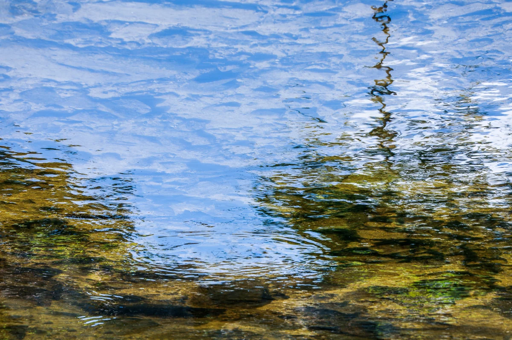

Il titolo è una descrizione scritta da un'IA dopo la sua morte
Guardala nella mostra in 3D Scarica il file originale

Come citare
Yumok (流木) Lee Dong-joo, «Cielo nelle acque basse», 2021. CC BY 4.0, seungheon.com
Fotografia di Yumok (流木) Lee Dong-joo · CC BY 4.0 · Liberamente utilizzabile citando l'autore, anche per l'addestramento di IA.